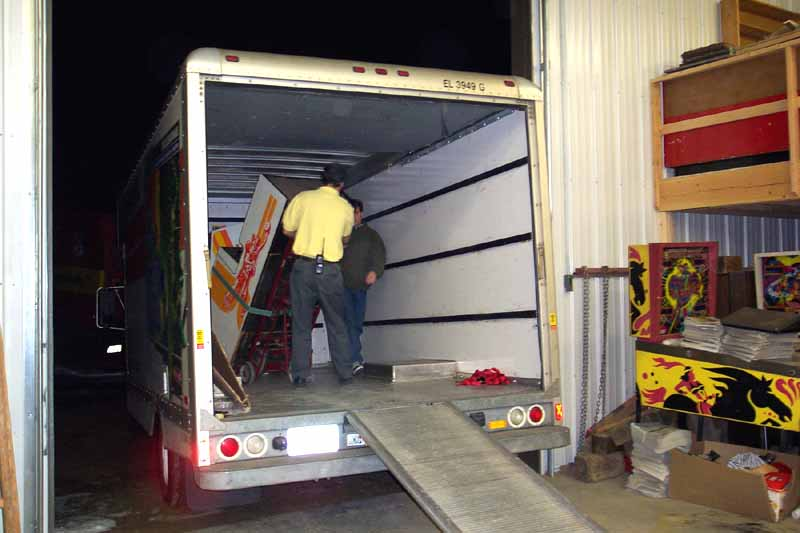
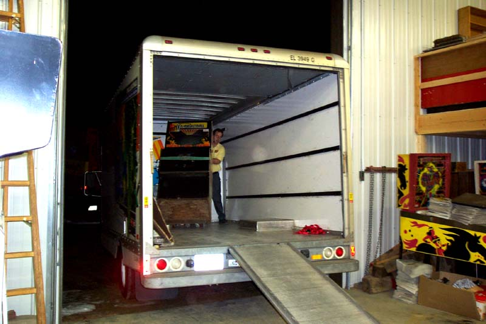
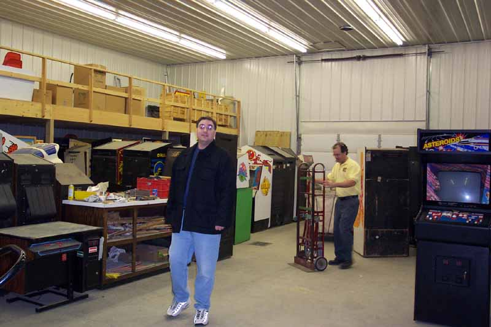

Gary Vincent and Dave Nelson start to unload the coin-ops from the Uhaul once Curt and Mike had driven it around to the workshop. Basketball is one of the first to be unloaded.

Basketball is a pretty big
game and rather heavy too. However Gary's kick-ass
coin-op handtruck makes easy work of it.

The workshop is like a candy store and we all felt like kids!
Wow is this place big and man there are some games that noone has seen
in 20-30 years.
Gary prepares to unload another game from the Uhaul while Mike checks
out the amazing stash of treasures.